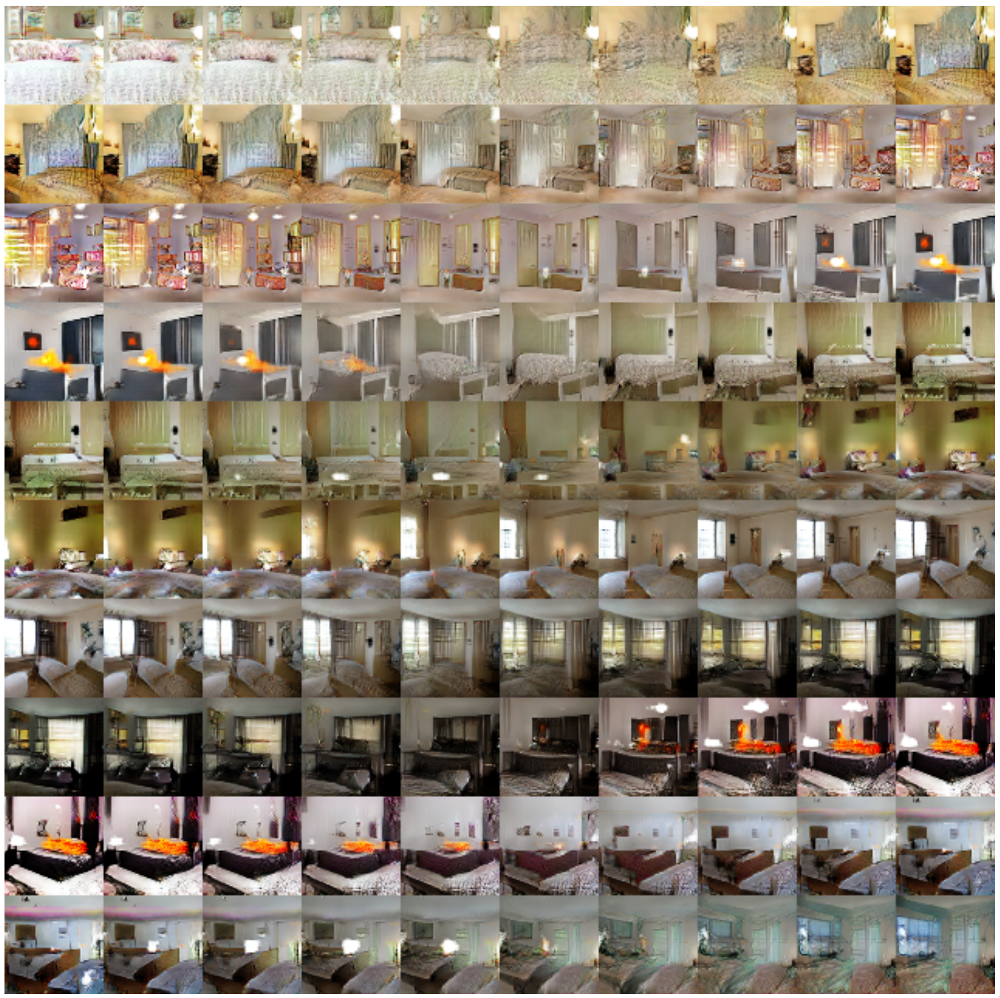
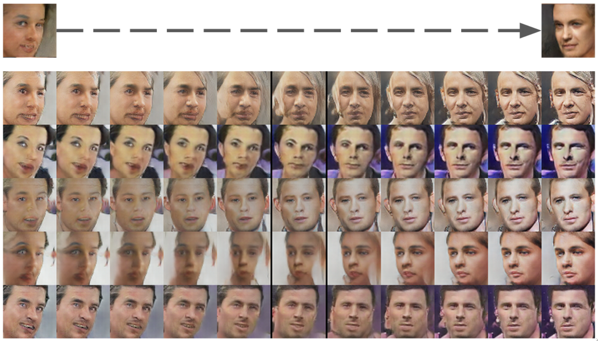

<!DOCTYPE html>
<html lang="en">
  <head>
    <meta charset="utf-8" />
    <meta name="viewport" content="width=device-width, initial-scale=1.0, maximum-scale=1.0, user-scalable=no" />

    <title>Generatywne sieci przeciwstawne</title>
    <link rel="shortcut icon" href="./../../favicon.ico" />
    <link rel="stylesheet" href="./../../dist/reset.css" />
    <link rel="stylesheet" href="./../../dist/reveal.css" />
    <link rel="stylesheet" href="./../../dist/theme/beige.css" id="theme" />
    <link rel="stylesheet" href="./../../css/highlight/zenburn.css" />

    <link rel="stylesheet" href="./../../_assets/custom.css" />

  </head>
  <body>
    <div class="reveal">
      <div class="slides"><section ><section data-markdown><script type="text/template">
<!-- .element data-auto-animate -->
# Generatywne sieci przeciwstawne
### Generative Adversarial Networks (Goodfellow 2014)


[Karras 2018]
</script></section><section data-markdown><script type="text/template"><!-- .element data-auto-animate -->
# Generatywne sieci przeciwstawne


[Brundage 2018]
</script></section><section data-markdown><script type="text/template">

## Modelowanie generatywne

Model generatywny opisuje sposób generowania zestawu danych z punktu widzenia modelu probabilistycznego. Poprzez próbkowanie z tego modelu jesteśmy w stanie wygenerować nowe dane. 

<!-- .element style="width:50%" -->

[Foster]
</script></section></section><section ><section data-markdown><script type="text/template"><!-- .element data-auto-animate -->
## Struktura GAN

Rywalizacja dwóch graczy (Generatora i Dyskryminatora) do momentu osiągnięcia równowagi.


<div class="cols"><div>

### Generator
- funkcja (sieć neuronowa) generująca syntetyczne (fałszywe) dane
- nigdy nie widzi danych rzeczywistych
- wejście: liczby losowe
- cel: wygenerowanie danych syntetycznych o cechach danych rzeczywistych

</div><div>

### Dyskryminator
- funkcja (sieć neuronowa) określająca prawdopodobieństwo tego, że dane są rzeczywiste lub syntetyczne
- wytrenowana na danych rzeczywistych i syntetycznych
- cel: odrzucenie danych syntetycznych

</div></div>


**Trenowanie generatora przebiega wyłącznie na podstawie błędu dyskryminatora.**
</script></section><section data-markdown><script type="text/template"><!-- .element data-auto-animate -->
## Struktura GAN

- $D$ - sieć o $d$-wymiarowym wejściu i jednym wyjściu z przedziału $[0,1]$.
- wyjście sieci $D$ określa, czy wejście jest prawdziwe (wyjście $1$) czy fałszywe (wyjście $0$)
- $G$ - sieć o $p$-wymiarowym wejściu i $d$-wymiarowym wyjściu
- $p$-wymiarowy wektor na wejściu $G$ wskazuje położenie w ukrytej przestrzeni (próbkowanie przestrzeni ukrytej wektorem z rozkładu normalnego).


</script></section><section data-markdown><script type="text/template">
## Optymalizacja (gra *minimax*)


<div class="cols"><div>

### Cel dyskryminatora:


### Cel generatora:


Optymalizacja $\rightarrow$ gra *minimax*:

Minimize$_G$Maximize$_D J_D$


</div><div>

- $R_m$ - losowa próbka $m$ danych rzeczywistych
- $S_m$ - $m$ syntetycznych danych wygenerowanych przez $G$
- $S_m = \\{G(\bar Z_1) \ldots G(\bar Z_m)\\}$
- $Z_m$ - $p$-wymiarowe wektory losowe
- $J_D$, $J_G$ - funkcja celu

W wyniku działania algorytmu zostaje osiągnięty *punkt siodłowy* (stan równowagi między dyskryminatorem i generatorem).

</div></div>

</script></section><section data-markdown><script type="text/template">
## Schemat algorytmu (pseudokod)

#### Generacja
```
noise = random([BATCH_SIZE, LATENT_DIM])
generated_images = G(noise) 
real_images = get_images(BATCH_SIZE)

```

#### Dyskryminacja
```
real_output = D(images)
fake_output = D(generated_images)
```

#### Funkcja straty
```
disc_loss = cross_entropy(ones_like(real_output), real_output)
disc_loss += cross_entropy(zeros_like(fake_output), fake_output)

gen_loss = cross_entropy(ones_like(fake_output), fake_output)
```

#### Wsteczna propagacja i optymalizacja
```
gradients_of_generator = gradient(gen_loss, G.params)
gradients_of_discriminator = gradient(disc_loss, D.params)

generator_optimizer.apply_gradients(gradients_of_generator)
discriminator_optimizer.apply_gradients(gradients_of_discriminator)
```
</script></section></section><section ><section data-markdown><script type="text/template"><!-- .element data-auto-animate -->

# DCGAN
<!-- .element class="r-fit-text" -->
## Deep convolutional GAN

*na podstawie [Radford 2016]*
</script></section><section data-markdown><script type="text/template"><!-- .element data-auto-animate -->


<div class="cols"><div>

- zastąpić warstwy skalujące (typu *MaxPooling*) warstwami splotowymi z większym skokiem w dyskryminatorze (np. stride=2) i skokiem ułamkowym w generatorze (splot transponowany)
- używać warstw skalujących (*BatchNorm*) zarówno w generatorze i dyskryminatorze
- nie używać warstw gęstych
- w generatorze używać funkcji aktywacji *ReLU*, w ostatniej warstwie funkcji *tanh*
- używać funkcji aktywacji *LeakyReLU* w dyskryminatorze

</div><div>

# DCGAN
### Zalecenia
*na podstawie [Radford 2016]*


</div></div>
</script></section><section data-markdown><script type="text/template"><!-- .element data-auto-animate -->

# DCGAN

<!-- .element style="width:60%" -->

```py
# input shape (100, 1, 1), tylko warstwy splotowe
seq = Sequential(
    ConvTranspose2d(in_channels=100,  out_channels=1024, kernel_size=(4,4), stride=(1,1)),
    ConvTranspose2d(in_channels=1024, out_channels=512,  kernel_size=(4,4), stride=(2,2), padding=(1,1)),
    ConvTranspose2d(in_channels=512,  out_channels=256,  kernel_size=(4,4), stride=(2,2), padding=(1,1)),
    ConvTranspose2d(in_channels=256,  out_channels=128,  kernel_size=(4,4), stride=(2,2), padding=(1,1)),
    ConvTranspose2d(in_channels=128,  out_channels=3,    kernel_size=(4,4), stride=(2,2), padding=(1,1)),
)
```
</script></section></section><section ><section data-markdown><script type="text/template">

<!-- .element data-auto-animate data-auto-animate-restart -->
## Arytmetyka w przestrzeni ukrytej
<!-- .element class="r-fit-text" -->

</script></section><section data-markdown><script type="text/template">
<!-- .element data-auto-animate -->
## Arytmetyka w przestrzeni ukrytej



Interpolacja [Radford 2016]
</script></section><section data-markdown><script type="text/template"><!-- .element data-auto-animate -->
## Arytmetyka w przestrzeni ukrytej


Arytmetyka wektorów [Radford 2016]
</script></section><section data-markdown><script type="text/template"><!-- .element data-auto-animate -->

## Arytmetyka w przestrzeni ukrytej


Arytmetyka wektorów [Radford 2016]
</script></section><section data-markdown><script type="text/template"><!-- .element data-auto-animate -->

## Arytmetyka w przestrzeni ukrytej



"A *turn* vector was created from four averaged samples of faces looking left vs looking right. By adding interpolations along this axis to random samples we were able to reliably transform their pose." [Radford 2016]

</script></section></section><section ><section data-markdown><script type="text/template"><!-- .element data-auto-animate data-auto-animate-restart -->

<div class="cols"><div>

# StyleGAN
*[Karras 2019]*

- model zainspirowany pracami dotyczącymi transferu stylu
- separacja cech wysokopoziomowych, średniopoziomowych i niskopoziomowych
- dodanie szumu w celu stochastycznego zróżnicowania
- poprawienie własności interpolacyjnych

</div><div>


</div></div>
</script></section><section data-markdown><script type="text/template"><!-- .element data-auto-animate -->

<div class="cols21"><div>

Copying the styles corresponding to coarse spatial
resolutions ($4^2$ – $8^2$) brings high-level aspects such as pose, general hair style, face shape, and eyeglasses from source B, while all colors
(eyes, hair, lighting) and finer facial features resemble A. If we instead copy the styles of middle resolutions ($16^2$ – $32^2$) from B, we inherit
smaller scale facial features, hair style, eyes open/closed from B, while the pose, general face shape, and eyeglasses from A are preserved.
Finally, copying the fine styles ($64^2$ – $1024^2$) from B brings mainly the color scheme and microstructure.

</div><div>


</div></div>

</script></section></section><section ><section data-markdown><script type="text/template">


# Warto zobaczyć

- [Progressive Growing of GANs for Improved Quality, Stability, and Variation](https://research.nvidia.com/sites/default/files/pubs/2017-10_Progressive-Growing-of/karras2018iclr-paper.pdf)
- [A Style-Based Generator Architecture for Generative Adversarial Networks
](https://arxiv.org/abs/1812.04948)
- [Image Generation from Scene Graphs](https://arxiv.org/pdf/1804.01622.pdf)
- [Image-to-Image Translation with Conditional Adversarial Nets](https://phillipi.github.io/pix2pix/)
- [Unpaired Image-to-Image Translation
using Cycle-Consistent Adversarial Networks](https://arxiv.org/pdf/1703.10593.pdf)
- [Large Scale GAN Training for High Fidelity Natural Image Synthesis](https://arxiv.org/pdf/1809.11096.pdf)
- [This Person Does Not Exist](https://thispersondoesnotexist.com/)
</script></section><section data-markdown><script type="text/template">
# Przykład

- [Deep convolutional generative adversarial networks (PyTorch)](https://github.com/tomgrad/SN-kod/blob/main/dcgan_pytorch/dc-gan.ipynb)


# Źródła

- C. C. Aggarwal, *Neural Networks and Deep Learning*,  Springer 2018
- D. Foster, *Generative Deep Learning*, O'Reilly 2019
- [Generative Adversarial Networks, Ian J. Goodfellow *et.al.*, NIPS 2014](https://arxiv.org/abs/1406.2661)
- [Unsupervised Representation Learning with Deep Convolutional Generative Adversarial Networks, Alec Radford *et.al.*, ICLR 2016](https://arxiv.org/abs/1511.06434)
</script></section></section></div>
    </div>

    <script src="./../../dist/reveal.js"></script>

    <script src="./../../plugin/markdown/markdown.js"></script>
    <script src="./../../plugin/highlight/highlight.js"></script>
    <script src="./../../plugin/zoom/zoom.js"></script>
    <script src="./../../plugin/notes/notes.js"></script>
    <script src="./../../plugin/math/math.js"></script>
    <script>
      function extend() {
        var target = {};
        for (var i = 0; i < arguments.length; i++) {
          var source = arguments[i];
          for (var key in source) {
            if (source.hasOwnProperty(key)) {
              target[key] = source[key];
            }
          }
        }
        return target;
      }

      // default options to init reveal.js
      var defaultOptions = {
        controls: true,
        progress: true,
        history: true,
        center: true,
        transition: 'default', // none/fade/slide/convex/concave/zoom
        plugins: [
          RevealMarkdown,
          RevealHighlight,
          RevealZoom,
          RevealNotes,
          RevealMath
        ]
      };

      // options from URL query string
      var queryOptions = Reveal().getQueryHash() || {};

      var options = extend(defaultOptions, {"controls":true,"width":1920,"height":1080,"theme":"beige"}, queryOptions);
    </script>


    <script>
      Reveal.initialize(options);
    </script>
  </body>
</html>
